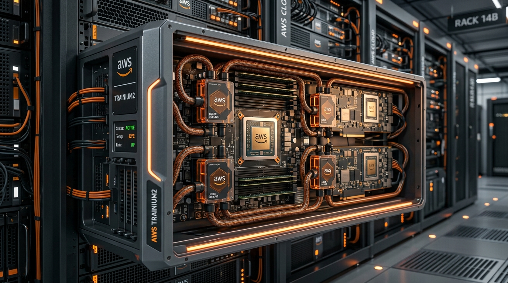

🟣 Ampere ARM 서버 CPU 로드맵
Ampere Computing (암페어)은 기존 x86 (Intel / AMD) 아키텍처의 비효율적인 전력 소비와 공간 집적도를 타파하기 위해 설립된 ARM 아키텍처 기반 범용 서버 CPU 전문 설계 기업입니다. 클라우드 네이티브 컴퓨팅에 극대화된 전력 효율과 확장성을 앞세워 Oracle Cloud, Google Cloud, Microsoft Azure 등 주요 퍼블릭 클라우드 인프라에 주도적으로 도입되고 있습니다.
1. 대표 플랫폼 이미지
저전력 초고집적 컨테이너 클라우드 서버 구축을 타겟으로 설계된 Ampere Altra / AmpereOne 서버 컴퓨트 트레이입니다.

2. Ampere ARM CPU 세대별 로드맵 요약
Ampere는 전통적인 x86 아키텍처의 복잡성을 배제하고, 동시성 처리가 잦은 클라우드 환경을 저전력 단일 스레드 구조로 설계한 독자 코어 로드맵을 유지하고 있습니다.
| 출시 연도 | CPU 모델명 | 물리 코어 수 (단일 스레드) | 지원 메모리 규격 | 공정 및 특징 |
|---|---|---|---|---|
| 2020 | Ampere Altra | 최대 80 코어 | DDR4 (8채널) | TSMC 7nm 공정. 업계 최초로 완전한 서버 등급 ARM CPU로서 성공적 클라우드 상용화 안착. |
| 2021 | Ampere Altra Max | 128 코어 | DDR4 (8채널) | TSMC 7nm 공정. 동일 전력 엔벨로프(TDP) 내에서 코어 밀도를 높여 가상머신당 비용 최적화. |
| 2023 ~ 2024 | AmpereOne | 최대 192 코어 | DDR5 (8채널 / 12채널) | TSMC 5nm 공정. ARM 표준 코어(Neoverse)에서 탈피해 Ampere가 자체 설계한 독자 커스텀 코어 탑재. |
| 2025~2026 (E) | AmpereOne 개량형 | 256 코어 이상 (예측) | DDR5 / PCIe Gen6 | 3nm 미세공정 및 차세대 메모리 스케일 아키텍처로 개량 진행 중. |
3. 하드웨어 구성 및 기술적 차별성
Ampere ARM 프로세서 제품군이 데이터센터 내에서 차별화되는 고유의 하드웨어 특장점입니다.
- 완전한 단일 스레드 물리 코어 (Single-Threaded Cores):
인텔이나 AMD의 x86 CPU는 하나의 물리 코어를 가상으로 쪼개서 쓰는 하이퍼스레딩(SMT) 기술을 적용해 리소스를 공유하지만, Ampere CPU는 모든 코어가 1코어 = 1스레드로 완전히 독립 분리되어 있습니다. 이를 통해 클라우드 가상환경에서 타 사용자의 연산 부하로 인해 성능이 저하되는 이웃 노이즈(Noisy Neighbor) 현상을 근본적으로 해결합니다.
- 초저전력 및 고밀도 친환경 서버:
x86 대비 동일 연산 성능 기준 소비 전력이 절반 이하에 불과합니다. 이는 공조 및 냉각 비용 절감뿐만 아니라, 동일 전력 공급 한계를 가진 랙 공간 내에 장착할 수 있는 가상머신(VM) 및 컨테이너의 밀도를 획기적으로 증가시킵니다.